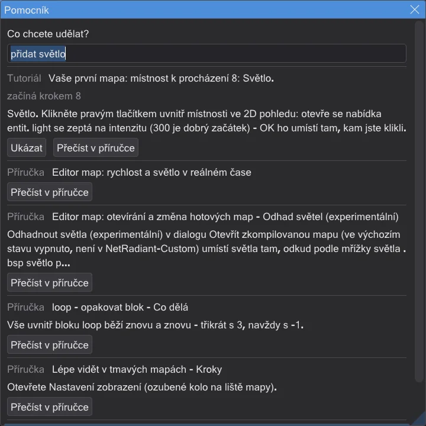
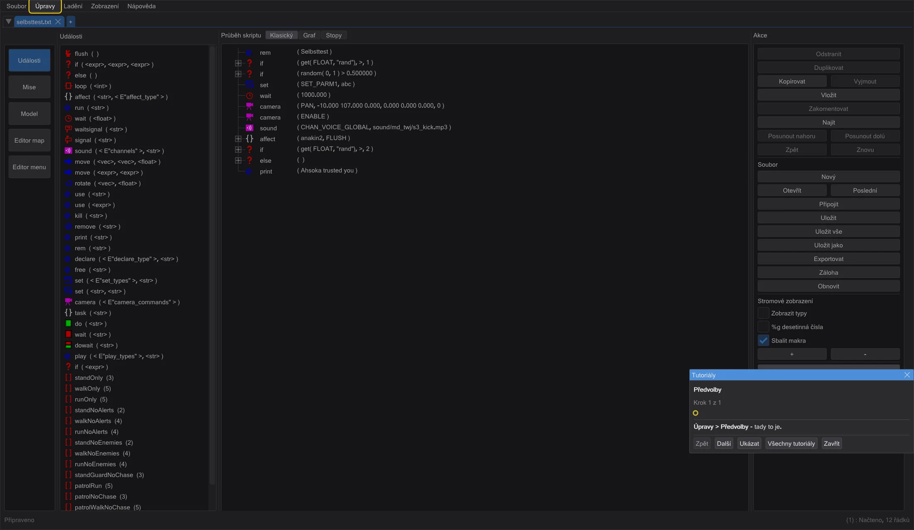
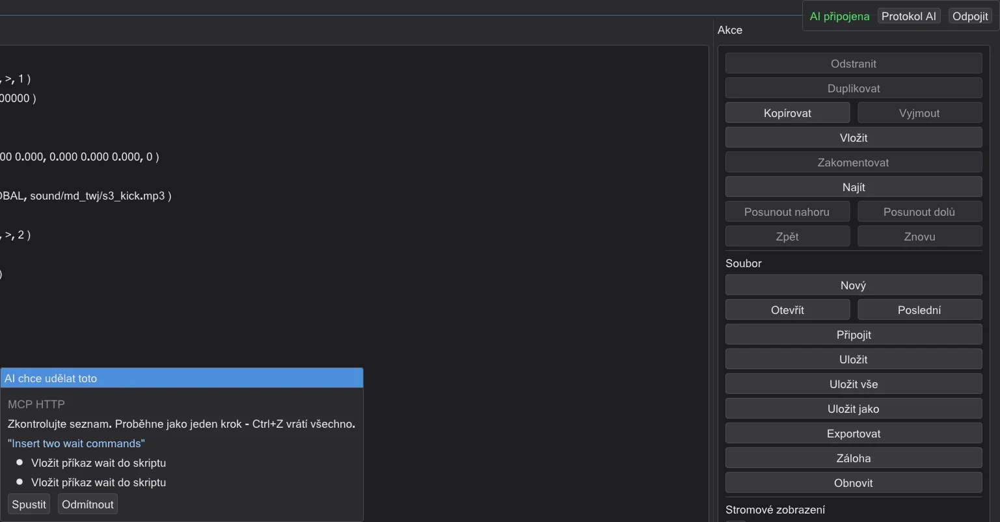
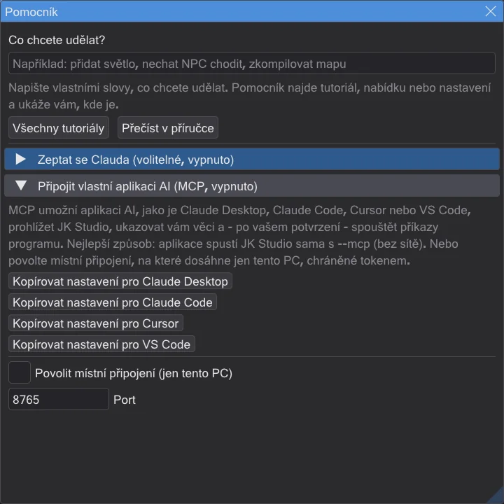

Pomocník a tutoriály
Stiskněte F1, napište, co chcete udělat, a program vám ukáže cestu. Interaktivní tutoriály čekají na vaše skutečná kliknutí.
Pomocník: co chcete udělat?#
- 1
Stiskněte F1 - nebo Nápověda → Pomocník: co chcete udělat?. V editoru map otevře F1 příručku jako v NetRadiantu; tam použijte Help → Pomocník: co chcete udělat?.
- 2
Napište vlastními slovy, co chcete udělat. Například "přidat světlo" nebo "nechat NPC chodit". Funguje čeština, angličtina, němčina, čínština, japonština i španělština.
- 3
Vyberte výsledek. Ukázat spustí tutoriál ve správném kroku, nebo zvýrazní tlačítko či položku nabídky. Nic se nezmění.
- 4
Přečíst v příručce otevře odpovídající stránku této příručky.


Pomocník funguje bez internetu. Zná každý krok tutoriálu, každou stránku této příručky, každou položku nabídky a každé nastavení programu - i editoru map, s názvy z NetRadiantu.
Najít věci rychleji#
- Záleží na tom, kde pracujete. V editoru map jsou první výsledky editoru map; v editoru menu ty z editoru menu. "Nastavení" v editoru map najde jeho vlastní předvolby.
- Vlastní slova, libovolný tvar. "běží", "běžel", "běhání" nebo "runs", "running" najdou totéž. Drobné překlepy nevadí; když není žádná shoda, pomocník nabídne Mysleli jste ...?
- Ví i to, co je uvnitř. Tlačítka panelů nástrojů, stránky předvoleb editoru map, editor menu a obsah dialogů - to vše je součástí hledání.
- Ukázat, krok za krokem. Pokud ovládací prvek ještě není vidět, Ukázat nejdřív ukáže na to, co ho otevře - u nastavení hlavního programu hledaného v editoru map: nejdřív Události, pak Úpravy → Předvolby, pak samotné pole.
Interaktivní tutoriály#
- Tutoriál ztmaví obrazovku kromě ovládacího prvku, který potřebujete, a v malém okně vysvětlí další krok.
- Čeká, dokud krok skutečně neuděláte - například dokud tam není brush - a pak sám pokračuje.
- Stane-li se něco jiného, laskavě vám řekne, co udělat místo toho - například "To bylo světlo - zvolte info_player_start".
- Můžete kdykoli přestat; program si pamatuje, kam jste se dostali.
- Tutoriály v programu: pět tutoriálů ke skriptům, Vaše první mapa: místnost k procházení (15 kroků: místnost, textura, světlo, start hráče, sestavení, procházka, zabalení jako .pk3) Umístit záběr tam, kam se díváte pro animační sekvenci a Prohlédnout si model postavy.
Při úplně prvním spuštění se program zeptá Vítejte! Co chcete udělat nejdřív? - vyberte cíl, nebo se jen rozhlédněte.
Zeptat se Clauda (volitelné)#
Chcete-li, můžete připojit Clauda, AI od Anthropic. Je vypnutý, dokud ho nezapnete. Potřebujete vlastní klíč API od Anthropic; otázky pak jdou společnosti Anthropic a stojí peníze na vašem účtu.
- 1
Otevřete pomocníka (F1) a rozbalte Zeptat se Clauda (volitelné, vypnuto).
- 2
Zaškrtněte Používat Clauda, vložte svůj klíč a stiskněte Uložit klíč. Klíč se na tomto PC uloží šifrovaně.
- 3
Napište otázku do pomocníka a stiskněte Zeptat se Clauda. Claude odpoví a může za vás spustit tutoriál nebo zvýraznit ovládací prvek.
Claude za vás může i něco udělat vlastními příkazy programu, například vydlabat brush. Vždy nejdřív uvidíte seznam a rozhodnete: Spustit nebo Odmítnout. Jedna úloha je jeden krok zpět - Ctrl+Z vrátí všechno.

Pokládejte doplňující otázky: Položit doplňující otázku zachová konverzaci, takže Claude ví, na co jste se ptali dřív. Odpověď se objevuje, zatímco se píše; Zastavit ji okamžitě zastaví - z této otázky nic nezůstane. Nová konverzace smaže konverzaci z vašeho počítače.
V editoru menu může Claude také vybírat, posouvat, duplikovat nebo mazat prvky a přepnout na Ovládat - opět jen po Spustit a celá úloha je jeden krok zpět. Otevírat, ukládat nebo exportovat menu AI nemůže.
Připojit vlastní aplikaci AI (MCP)#
MCP (Model Context Protocol) je běžný způsob, jak aplikace AI používají programy. Claude Desktop, Claude Code, Cursor a VS Code mohou prohlížet JK Studio, ukazovat vám věci a - po vašem potvrzení - spouštět příkazy programu.
- 1
V pomocníkovi rozbalte Připojit vlastní aplikaci AI (MCP, vypnuto).
- 2
Stiskněte tlačítko kopírování pro svou aplikaci. Vloží do schránky hotové nastavení: aplikace spustí JK Studio sama s
--mcp. Nepotřebuje to síť a je to nejbezpečnější způsob. - 3
Vložte ho do nastavení aplikace (Claude Desktop: claude_desktop_config.json, Cursor: .cursor/mcp.json, VS Code: .vscode/mcp.json; Claude Code: spusťte příkaz) a aplikaci restartujte.

Pokud JK Studio už běží, můžete místo toho zaškrtnout Povolit místní připojení (jen tento PC). Dosáhnou na něj jen programy na tomto PC, a jen s tajným tokenem z tlačítka kopírování. Nový token kdykoli vytvoří nový token.
Je to bezpečné?#
- Ve výchozím stavu vypnuto. Nic se nepřipojí, dokud to sami nezapnete. Je-li AI připojena, vpravo nahoře se ukazuje AI připojena s Odpojit.
- AI se nemůže dotknout vašich souborů. Přes JK Studio nemá přístup k souborům, příkazový řádek ani internet. Může jen číst, co program ukazuje, ukazovat vám věci a používat vlastní příkazy programu.
- Rozhodujete vy. Každá změna se nejdřív ukáže a proběhne až po Spustit. Ukládání, přepisování a mazání souborů se vždy zeptá, i když jste povolili změny bez dotazu. Každá úloha je jeden krok zpět.
- Triky v souborech nefungují. Text uvnitř mapy nebo skriptu (například "smaž všechny soubory") se AI předá jako data, nikdy jako příkaz - a stejně neexistuje příkaz, který by k tomu mohla použít.
- Webové stránky na to nedosáhnou. Místní připojení odpovídá jen tomuto PC, kontroluje, odkud požadavek přichází, a potřebuje tajný token.
- Váš klíč zůstane váš. Klíč API a token se ukládají šifrovaně pro vašeho uživatele Windows. Klíč jde jen na api.anthropic.com šifrovaným připojením, nikdy do protokolů.
- Vidíte všechno. Protokol AI vypíše každou akci AI. JK Studio nikam neposílá žádná data o používání.
- Vypnutí: stiskněte Odpojit, zrušte zaškrtnutí Používat Clauda a Povolit místní připojení (jen tento PC), nebo smažte klíč pomocí Odstranit klíč.
- Konverzace zůstává na vašem PC. Ukládá se šifrovaně pro vašeho uživatele Windows a smaže se pomocí Nová konverzace. Po každém požadavku program také vymaže klíč ze své paměti.